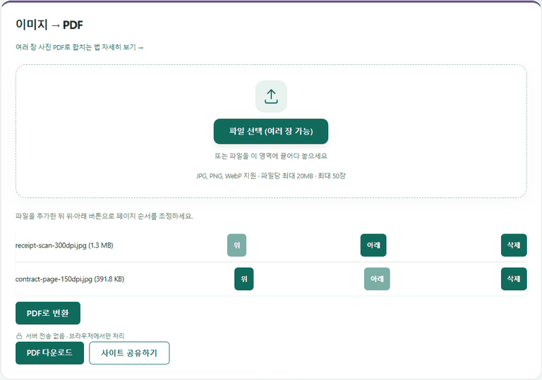

IMAGE TOOLBOX / GUIDE
여러 장 사진을 하나의 PDF로 합치는 방법
설치나 회원가입 없이, 브라우저에서 바로 PDF로 합칠 수 있습니다.
계약서 앞뒤, 영수증 여러 장을 한 파일로
서류를 제출할 때 "파일 1개로 올려주세요"라는 조건이 붙는 경우가 많습니다. 신분증 앞뒷면, 영수증 여러 장, 계약서 각 페이지를 휴대폰으로 따로 찍었다면 사진을 순서대로 묶은 PDF 하나가 필요합니다. image-toolbox의 이미지→PDF 기능은 JPG·PNG·WebP 사진을 최대 50장(장당 20MB)까지 받아 브라우저 안에서 PDF로 묶습니다.
순서는 업로드한 뒤에도 바꿀 수 있습니다
1. 사진 선택. 사진을 한 번에 고르거나 업로드 영역에 끌어다 놓습니다.
2. 순서 정리. 파일 목록마다 붙은 위·아래 버튼으로 페이지 순서를 맞추고, 잘못 넣은 사진은 삭제 버튼으로 뺍니다. 파일 이름을 미리 정렬해 둘 필요는 없습니다.
3. PDF로 변환. "PDF로 변환"을 누르면 바로 다운로드 버튼이 나타납니다.

직접 묶어 본 결과: 사진 4장, 1초 미만
휴대폰 사진 크기(4032×3024) 두 장과 스캔한 영수증·계약서 이미지 두 장을 섞어 PDF로 만들어 봤습니다.
| 넣은 파일 | 크기 | 용량 |
|---|---|---|
| 가로 사진 | 4032×3024 | 3.4MB |
| 세로 사진 | 3024×4032 | 3.4MB |
| 영수증 스캔(300dpi) | 2480×3508 | 1.3MB |
| 계약서 사진(150dpi) | 1240×1754 | 391.8KB |
| 결과 PDF (4페이지) | — | 7.0MB (합계 8.5MB) |
변환은 1초가 채 걸리지 않았고, 가로 사진은 가로 페이지로, 세로 사진은 세로 페이지로 찌그러짐 없이 들어갔습니다. 사진 화질은 원본 해상도 그대로 유지되기 때문에 PDF 용량은 원본 합계와 비슷한 수준(이번에는 약 18% 작음)입니다.
측정에 쓴 파일은 직접 만든 테스트 이미지와 PDF입니다. 실제 사진은 테스트 이미지보다 디테일이 많아서 용량이 덜 줄어드는 편이니, 숫자는 대략적인 경향으로 봐 주세요.
인쇄하거나 A4로 제출할 때 주의할 점
만들어진 PDF의 페이지 크기는 A4가 아니라 사진의 픽셀 크기를 따라갑니다. 위 테스트에서 4032×3024 사진이 들어간 페이지는 PDF 뷰어 기준으로 가로 약 190cm짜리 페이지가 됐습니다. 화면으로 볼 때는 문제가 없지만, 그대로 인쇄하면 프린터가 한 장에 맞추지 못할 수 있습니다.
- 인쇄할 때: 인쇄 창에서 "용지에 맞춤(Fit to page)"을 선택하면 A4 한 장에 맞춰 나옵니다.
- "A4 규격 PDF"를 요구하는 곳에 낼 때: 페이지 크기까지 A4로 맞춰 주지는 않으므로, 제출처에서 A4 규격을 엄격히 확인한다면 한글·워드 같은 문서 프로그램에 사진을 넣어 PDF로 저장하는 방법이 더 확실합니다.
PDF가 업로드 제한보다 크다면
휴대폰 사진은 한 장에 3~5MB라서 몇 장만 묶어도 10MB를 넘기기 쉽습니다. 이럴 때는 이미지 압축 도구에서 사진을 먼저 줄인 뒤 PDF로 묶는 순서가 가장 확실합니다. 압축 도구의 "이메일·메신저용" 프리셋은 긴 변을 1600px로 줄이고 1MB 이하로 맞추는데, 테스트한 휴대폰 사진(3.4MB)은 800KB가 됐습니다. 서류 글씨를 읽는 데는 긴 변 1600px이면 충분한 경우가 대부분입니다. 이미 만든 PDF를 줄이고 싶다면 PDF 용량 줄이기를 쓰면 되지만, 이 방법은 페이지를 다시 이미지로 만들기 때문에 화질이 한 번 더 떨어집니다.
자주 묻는 질문
업로드한 뒤에 사진 순서를 바꿀 수 있나요?
네. 파일 목록마다 있는 위·아래 버튼으로 순서를 바꾸고, 삭제 버튼으로 빼낼 수 있습니다. 목록 순서가 그대로 PDF 페이지 순서가 됩니다.
세로 사진과 가로 사진을 섞어도 되나요?
네. 각 페이지는 사진의 원래 비율대로 만들어지므로 세로 사진은 세로 페이지, 가로 사진은 가로 페이지가 됩니다.
PDF 페이지가 A4 크기로 만들어지나요?
아니요. 페이지 크기는 사진의 픽셀 크기를 따라갑니다. 인쇄할 때는 인쇄 창에서 "용지에 맞춤"을 선택하세요.
몇 장까지, 얼마나 큰 파일까지 합칠 수 있나요?
최대 50장, 사진 한 장당 최대 20MB까지 지원합니다. JPG, PNG, WebP 형식을 사용할 수 있고, 아이폰 HEIC 사진은 먼저 이미지 압축 도구에서 JPG로 바꾼 뒤 넣으면 됩니다.
만든 PDF를 나중에 수정할 수 있나요?
완성된 PDF 안의 페이지를 편집하는 기능은 없습니다. 순서를 바꾸려면 사진을 다시 넣어 새로 만들거나, 이미 만든 PDF 여러 개를 이을 때는 PDF 합치기를 쓰세요.
사진이 서버에 업로드되나요?
아니요. PDF는 브라우저 안에서 만들어지고 사진을 서버로 보내지 않습니다. 화면 아래의 업로드 카운터로 작업 중 바깥으로 나간 파일 데이터가 없는지 확인할 수 있습니다.